تثبيت القالب
تثبيت بوست بلس من خلال FTP
- قم بتحميل القالب بعد إتمامك عملية الشراء على بيكاليكا إلى حاسوبك , بعدها قم بفك الضغط على محتويات الملف في ملف على حاسبك
- داخل الملف السابق ستجد ملف PostPlusTheme.zip
- إستخدم برنامج FTP للإتصال بإستضافتك التي يتواجد بها ووردبريس .
- قم برفع جميع محتويات ملف PostPlusTheme بعد فك الضغط عليه إلى المجلد التالي (/wp-content/themes/) , الخاص بووردبريس
- قم بالذهاب إلى لوحة التحكم ووردبريس > مظهر > قوالب , وستجد القالب مضاف قم بتفعيله .
تثبيت بوست بلس من خلال لوحة تحكم ووردبريس
- قم بتحميل القالب بعد إتمامك عملية الشراء على بيكاليكا إلى حاسوبك , بعدها قم بفك الضغط على محتويات الملف في ملف على حاسبك
- قم بالذهاب إلى ووردبريس وقم بتسجيل الدخول إلى لوحة التحكم > مظهر > قوالب > أضف جديد .
-
قم بالضغط على زر رفع قالب , بعد من خلال النافذة المنبثقة قم بالذهاب إلى المجلد الذي قمت بفك
الضغط عليه
وقم بإختيار ملف PostPlusTheme.zip - قم بالضغط على التنصيب الآن
- قم بتفعيل القالب .
إعدادت بوست بلس أولية
- بوجد إشعار للوردبريس في إعلى كل صفحة كتنبيه لضرورة تثبيت بعض الإضافات يرجى تثبيتها اولا .
- قم بضبط لغة بوست بلس لللغة إلى العربية
- صيغة التاريخ : قم بالتعليم على مخصص وأدرج داخلها : j F, Y
- قم بالذهاب بعدها لإعدادت الروابط الدائمة وقم بالتعليم على خيار : اليوم + عنوان المقالة
-
قم بتحديد الألوان الرئيسية للقالب من خلال لوحة التحكم : theme options > general settings > theme
colors
Main Color : من أجل اللون الرئيسي
Sec Color : من أجل اللون الثانوي - في الأسفل قم بتحديد الكلمات المفتاحية الخاصة بموقعك مفصولة ب فاصلة (,)
إعدادت الهيدر
- theme options > Header Settings 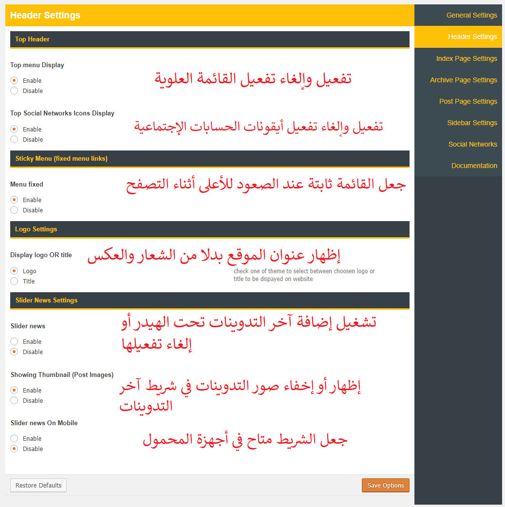
إعدادت الرئيسية
- theme options > Index Page Settings 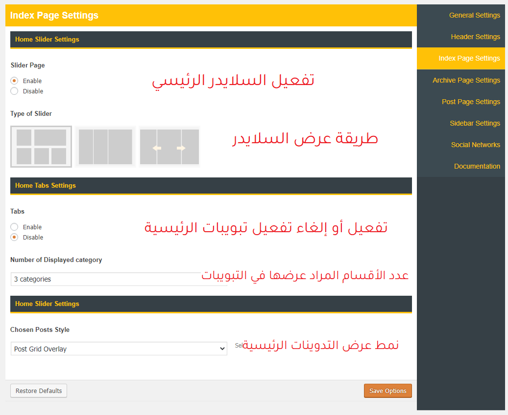
إعدادت التصنيفات
- theme options > Archive Page Settings 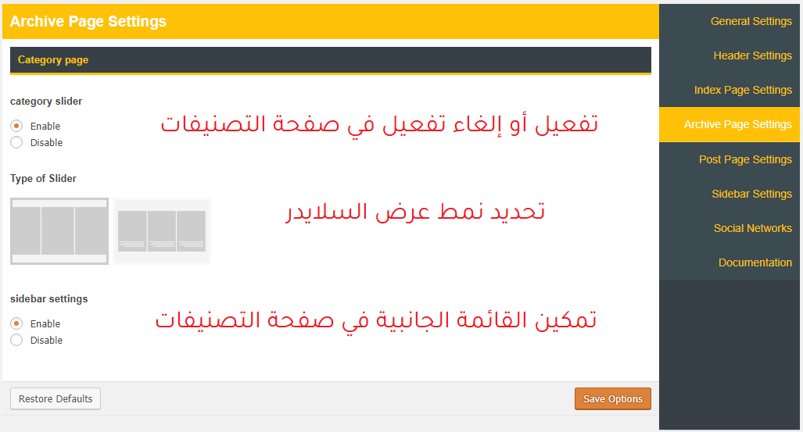
إعدادت التدوينة
- theme options > Post Page Settings 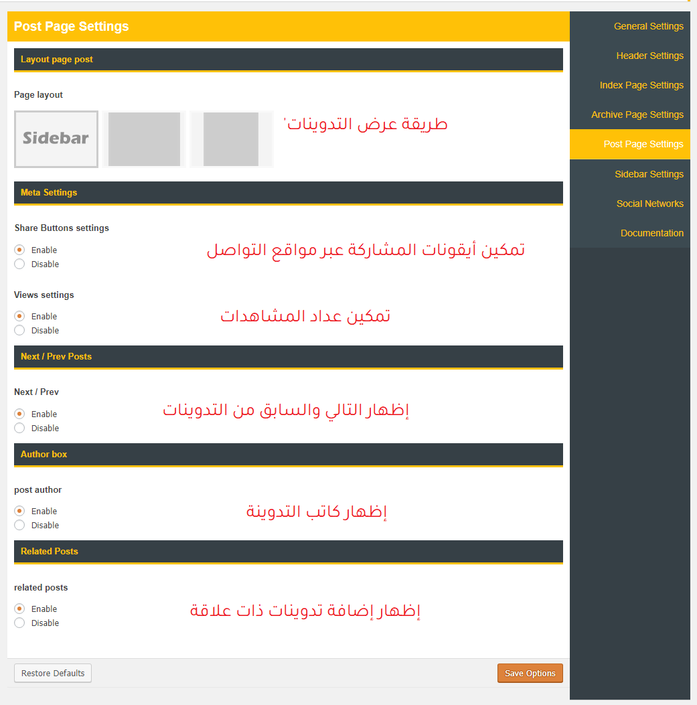
إعدادت القوائم الجانبية
- theme options > SideBar Settings 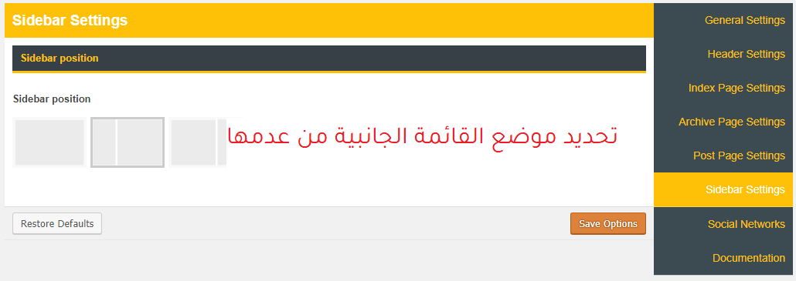
النشرة البريدية
- يرجى التأكد من تثبيت إضافة : Noptin v1.2.9
- يمكنك إعادة إستعمال أحد التصميمين لقائمة الإدخال المدرجة مع القالب noptin-forms-1590770098.json
- إذهب للإضافة : Email Forms > Import
- من خلال النافذة المنبثقة قم بإختيار الملف من المجلد الذي قمت بفك الضغط عنه
- لإستعمال النشرة البريدية ك إضافة قم بالذهاب إلى ودجات إبحث عن Noptin Premade Form
- بعدها قم بإختيار إسم الفورم الذي أنشأ مسبقا .
- ولإنشاء فورم جديد من خلال الإضافات قم بإختيار Noptin New Form بدلا من Noptin Premade Form
- بعدا قم بتخيص الحقول بما يناسبك
- يوجد توثيق خاص مرفق مع الإضافة لتخصيص الإضافة أكثر
ودجات
Slider News
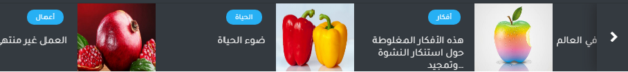
إضافة لعرض آخر المشاركات على شكل شريط متحرك مع الصور ويمكنك تخصيص الإضافة مبائرة من لوحة التحكم :
theme options > Header settings > Slider news settings .
Widget tabs
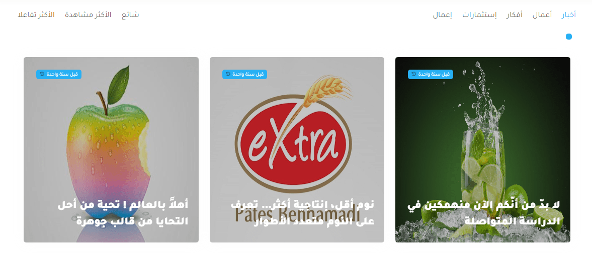
ودجات لإظهار آخر 3 مشاركات من كل قسم مع جانب لإظهار كل من المشاركات الأكثر شيوعا والأكثر
مشاهدة
وتعليقا يتم تخصيصها من لوحة التحكم : theme options > Index Page Settings > Home Tabs Settings
Custome Widget
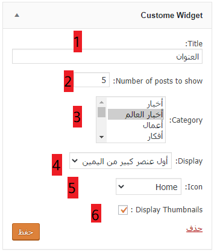
هذه هي واجهة تخصيص هذه الإضافة على قالب بوست بلس شرحها هو كالتالي :
- عنوان الإضافة سيظهر في واجهة الإضافة على الموقع
- عدد التدوينات المراد عرضها
- القسم المراد عرض تدويناتها
- توفر الإضافة حوالي 3 أشكال لنمط العرض
نمط قياسي
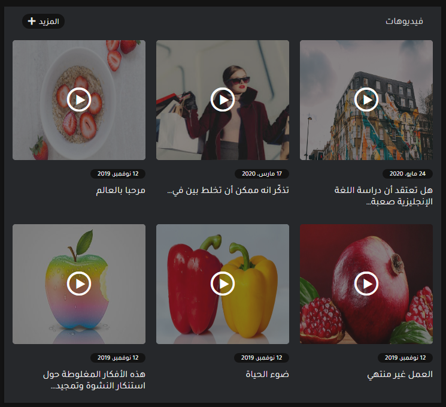نمط عنصر أول كبير من اليمين
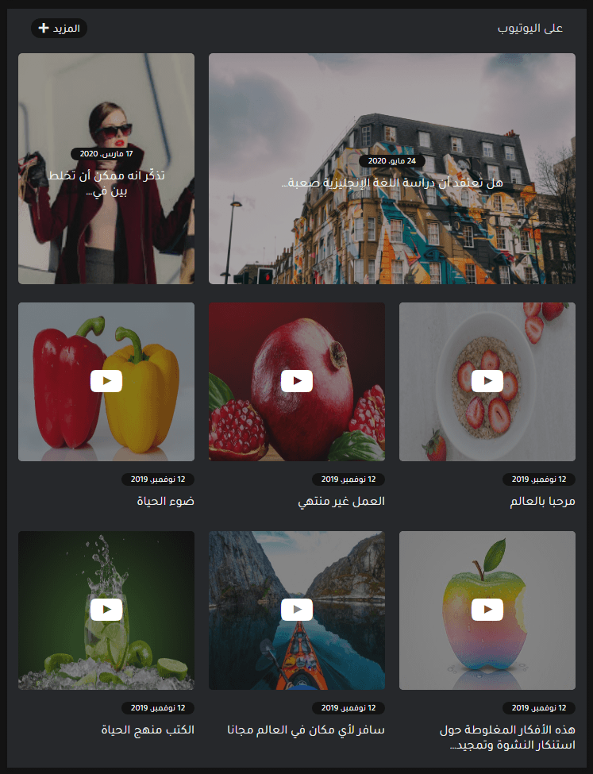نمط عنصر أول كبير من اليسار
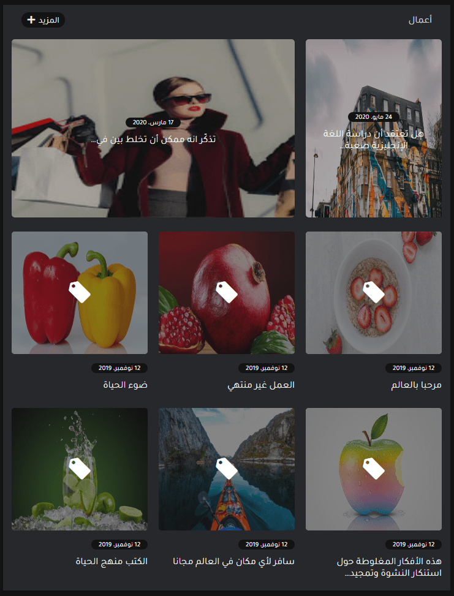 - الأيقونة
- إظهار أو عدم إظهار الصور البارزة
Category Posts
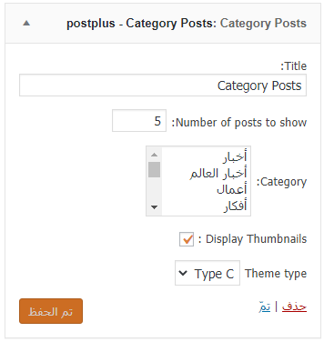
إضافة لاتختلف كثيرا عن سابقتها في ديناميكية العمل لكنها تختلف في طرق العرض المتوفرة
هي في الغالب نفس الخطوات مع غياب تحديد الأيقونة لذا سنقتصر على تحديد الأنماط الثلاثة المتوفرة في أنماط عرض الإضافة
TYPE A
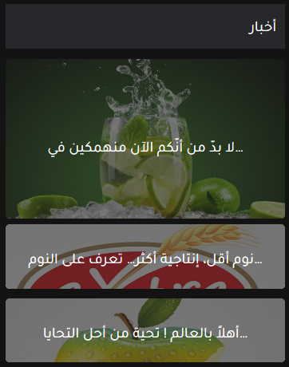TYPE B
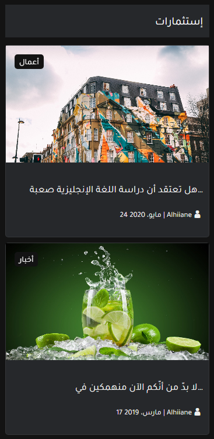TYPE C
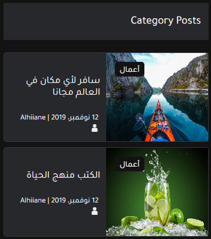Flex Last Posts
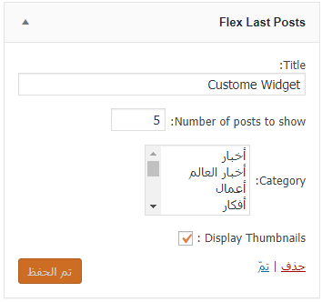
الإعدادت هي نفسها مع نمط عرض واحد مميز
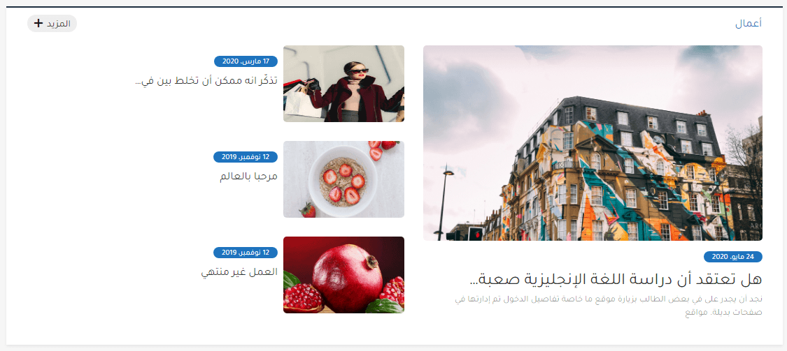
الأداء والسرعة
لتحسين الأداء والسرعة قمنا بإستخدام إضافة WP Fastest Cache المتوافقة كليا مع قالب بوست بلس
يرجى التأكد من تثبيتها
الإعدادت هي كالتالي :
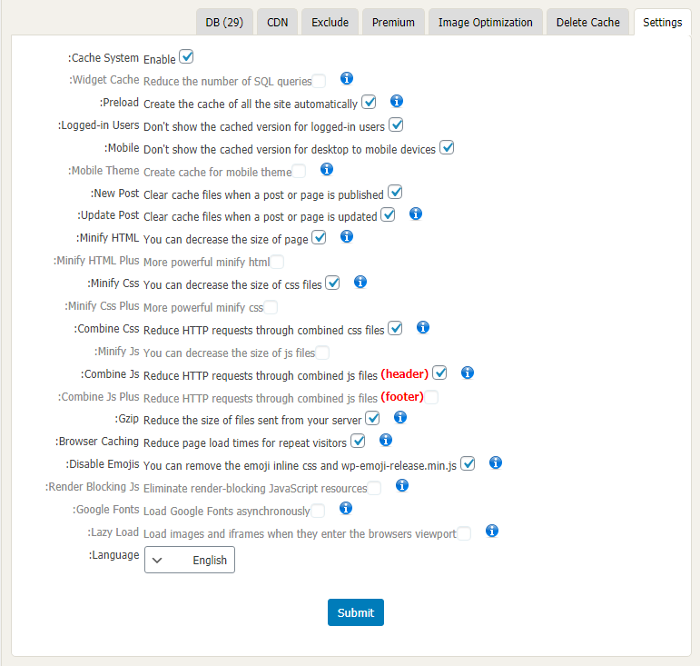
من حلال أكواد ملف .htaccess
Gzip
تدعم جميع المتصفحات الحديثة ضغط gzip وتتفاوض عليه تلقائيًا لجميع طلبات HTTP. يمكن أن يؤدي تمكين ضغط gzip إلى تقليل حجم الاستجابة المنقولة بنسبة تصل إلى 90٪ ، الأمر الذي يمكن أن يقلل بشكل كبير من مقدار الوقت لتنزيل المورد ، وتقليل استخدام البيانات للعميل ، وتحسين وقت عرض صفحاتك لأول مرة.
لتمكين ضغط gzip ، أضف الأسطر التالية إلى ملف htaccess الخاص بك:
# Compress HTML, CSS, JavaScript, Text, XML and fonts
AddOutputFilterByType DEFLATE application/javascript
AddOutputFilterByType DEFLATE application/rss+xml
AddOutputFilterByType DEFLATE application/vnd.ms-fontobject
AddOutputFilterByType DEFLATE application/x-font
AddOutputFilterByType DEFLATE application/x-font-opentype
AddOutputFilterByType DEFLATE application/x-font-otf
AddOutputFilterByType DEFLATE application/x-font-truetype
AddOutputFilterByType DEFLATE application/x-font-ttf
AddOutputFilterByType DEFLATE application/x-javascript
AddOutputFilterByType DEFLATE application/xhtml+xml
AddOutputFilterByType DEFLATE application/xml
AddOutputFilterByType DEFLATE font/opentype
AddOutputFilterByType DEFLATE font/otf
AddOutputFilterByType DEFLATE font/ttf
AddOutputFilterByType DEFLATE image/svg+xml
AddOutputFilterByType DEFLATE image/x-icon
AddOutputFilterByType DEFLATE text/css
AddOutputFilterByType DEFLATE text/html
AddOutputFilterByType DEFLATE text/javascript
AddOutputFilterByType DEFLATE text/plain
AddOutputFilterByType DEFLATE text/xml
# Remove browser bugs (only needed for really old browsers)
BrowserMatch ^Mozilla/4 gzip-only-text/html
BrowserMatch ^Mozilla/4\.0[678] no-gzip
BrowserMatch \bMSIE !no-gzip !gzip-only-text/html
Header append Vary User-Agent
التخزين المؤقت للمتصفح
عندما يعرض مستعرض ويب صفحة الويب الخاصة بك ، يجب عليه تحميل العديد من الأشياء مثل شعارك وملف CSS الخاص بك والموارد الأخرى. ما يفعله التخزين المؤقت للمتصفح هو "تذكر" الموارد التي قام المتصفح بتحميلها بالفعل. عندما ينتقل الزائر إلى صفحة أخرى على موقع الويب الخاص بك ، لا يلزم تحميل شعارك أو ملف CSS مرة أخرى ، لأن المتصفح قد "تذكره". والنتيجة النهائية هي أن صفحاتك يتم تحميلها بشكل أسرع.
لتمكين التخزين المؤقت للمتصفح ، أضف الأسطر التالية إلى ملف htaccess الخاص بك:
## EXPIRES CACHING ##
ExpiresActive On
ExpiresByType image/jpg "access 1 year"
ExpiresByType image/jpeg "access 1 year"
ExpiresByType image/gif "access 1 year"
ExpiresByType image/png "access 1 year"
ExpiresByType text/css "access 1 month"
ExpiresByType text/html "access 1 month"
ExpiresByType application/pdf "access 1 month"
ExpiresByType text/x-javascript "access 1 month"
ExpiresByType application/x-shockwave-flash "access 1 month"
ExpiresByType image/x-icon "access 1 year"
ExpiresDefault "access 1 month"
## EXPIRES CACHING ##